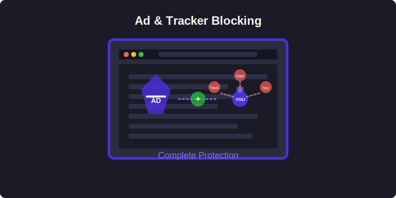

Ad & Tracker Blocking
Macro Browser provides powerful protection against intrusive content and tracking with its state-of-the-art ad and tracker blocking capabilities.

Overview
Modern websites often contain numerous ads and tracking elements that can:
- Compromise your privacy by collecting personal data
- Slow down page loading and degrade performance
- Consume bandwidth and system resources
- Create visual clutter and diminish user experience
- Potentially deliver malware through malicious ads
Macro Browser addresses these issues through an integrated, two-pronged approach:
- Ad Blocking: Removes intrusive advertisements while supporting ethical content monetization
- Tracker Blocking: Prevents tracking scripts from monitoring your online behavior
Key Benefits
Enhanced Privacy
- Blocks data collection mechanisms used by advertisers and analytics companies
- Prevents cross-site tracking that builds profiles of your browsing habits
- Blocks fingerprinting techniques used to identify you across websites
- Automatically sanitizes URL parameters used for tracking
Improved Performance
- Pages load up to 60% faster without ads and tracking scripts
- Reduces bandwidth usage by 30-40% on average
- Decreases CPU utilization and extends battery life on mobile devices
- Minimizes memory consumption by eliminating resource-intensive tracking code
Better User Experience
- Creates cleaner, less cluttered web pages
- Eliminates distracting animated ads and popups
- Reduces the number of consent dialogs by preventing tracking initialization
- Provides a more consistent browsing experience across websites
Unique Features
Macro Browser's blocking technology goes beyond standard solutions:
- Machine Learning Detection: Identifies new trackers through behavioral analysis
- Comprehensive Protection: Blocks tracking across all protocols, not just HTTP
- Performance-First Design: Minimal impact on browser responsiveness
- Smart Filter Lists: Adaptive filtering that prevents website breakage
- Dashboard Analytics: Visual reporting of blocking activities and benefits
- Ethical Considerations: Support for non-intrusive monetization methods
Detailed Documentation
For a comprehensive understanding of these features, please explore:
These detailed guides provide in-depth information about the technology, configuration options, and best practices for each feature.